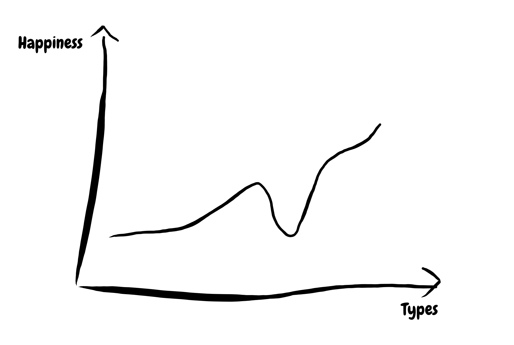
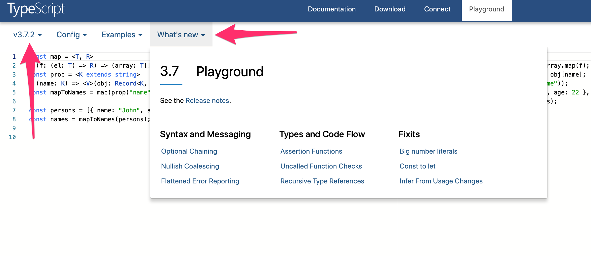

class: center, middle, inverse # What's new and 🌶 in TypeScript? ## Miłosz Piechocki [@miloszpp](https://twitter.com/miloszpp) ~ [codewithstyle.info](https://codewithstyle.info) --- # New TypeScript features in 2019 .small-text[ .column[ ## 3.3 * Improved behavior for calling union types * Incremental file watching for composite projects in `--build --watch` ## 3.4 * Faster subsequent builds with the `--incremental` flag * Higher order type inference from generic functions * Improvements for `ReadonlyArray` and `readonly` tuples * `const` assertions * Type-checking for `globalThis` * Convert parameters to destructured object ## 3.5 * Speed improvements * The Omit helper type * Improved excess property checks in union types * The `--allowUmdGlobalAccess` flag * Smarter union type checking * Higher order type inference from generic constructors ] .column[ ## 3.6 * Stricter Generators * More Accurate Array Spread * Improved UX Around Promises * Better Unicode Support for Identifiers * `import.meta` Support in SystemJS * `get` and `set` Accessors Are Allowed in Ambient Contexts * Ambient Classes and Functions Can Merge * APIs to Support `--build` and `--incremental` ## 3.7 * Optional Chaining * Nullish Coalescing * Assertion Functions * Better Support for never-Returning Functions * `--declaration` and `--allowJs` * (More) Recursive Type Aliases * The `useDefineForClassFields` Flag and The `declare` Property Modifier * Build-Free Editing with Project References * Uncalled Function Checks * Flatter Error Reporting * `// @ts-nocheck` in TypeScript Files * Semicolon Formatter Option ] ] --- class: center, middle # Why so many features? --- class: center, middle # Why bother? --- # Uncanny valley of TypeScript  --- .left[] .right[] --- class: center, middle, inverse # Const assertions --- # Type widening .row[ .column[ ``` const y = "a"; ``` ] .column[ ``` y: 'a' ``` ] ] -- .row[ .column[ ``` let x = "a"; ``` ] .column[ ``` x: string ``` ] ] -- .row[ .column[ ``` const person = { name: "John", age: 44 }; ``` ] .column[ ``` person: { name: string; age: number; } ``` ] ] --- # Const assertions .column[ ``` const person = { name: "John", age: 44 } as const; ``` ] .column[ ``` person: { name: readonly "John"; age: readonly 44; } ``` ] --- class: center, middle # Code example --- class: center, middle, inverse # Nullish coalescing --- # Default value pattern ``` interface User { name: string; position: string; childrenCount?: number; } ``` -- ``` function renderUser({ name, position, childrenCount }: User) { return ` <h1>${name}</h1> <dl> <dt>Position</dt> <dd>${position}</dd> <dt>Number of children</dt> * <dd>${childrenCount || "not provided"}</dd> </dl> `; } ``` --- # Default value with nullish coalescing ``` function renderUser({ name, position, childrenCount }: User) { return ` <h1>${name}</h1> <dl> <dt>Position</dt> <dd>${position}</dd> <dt>Number of children</dt> * <dd>${childrenCount ?? "not provided"}</dd> </dl> `; } ``` --- class: center, middle, inverse # Optional chaining --- # Accessing nested properties ``` interface Person { name: string; address?: { city: string; country?: { name: string; code?: string; }; }; } ``` -- ``` declare const person: Person; ``` -- ``` const code = person.address && person.address.country && person.address.country.code; ``` --- # Optional chaining ``` const code = person.address && person.address.country && person.address.country.code; ``` ...becomes... ``` const code = person.address?.country?.code; ``` --- class: center, middle # Before optional chaining... --- # Comparison with Option monad ``` interface Person { name: string; address: Option<{ city: string; country: Option<{ name: string; code: Option<string>; }>; }>; } ``` ``` pipe( flatMap(address => address.country), flatMap(country => country.code), map(toUpperCase) ); ``` --- class: center, middle, inverse # Type assertions --- # Runtime type checking ``` interface Article { title: string; content: string; } ``` -- ``` function assertArticle(obj: any): asserts obj is Article { if (!('title' in obj && 'content' in obj)) { throw new Error('This is not an article'); } } ``` -- ``` fetch('http://localhost/articles/1') .then((response) => response.json()) .then((body) => { assertArticle(body); * return body.title; }); ``` --- # Type assertions vs type guards ``` function isArticle(object: any): object is Article { return 'title' in object && 'content' in object; } ``` ``` fetch('http://example.com') .then((response) => response.json()) .then((body) => { if (isArticle(body)) { return body.title; } else { throw new Error('This is not an article'); } }); ``` --- class: center, middle, inverse # Function truthy checks --- # Can you spot a bug? ``` interface HttpResponse { code: number; body: string; isError: () => boolean; } ``` ``` function handleResponse(response: HttpResponse) { if (response.isError) { throw new Error('Received an error'); } return response.body; } ``` --- # TypeScript can! ``` interface HttpResponse { code: number; body: string; isError: () => boolean; } ``` ``` function handleResponse(response: HttpResponse) { * if (response.isError) { throw new Error('Received an error'); } return response.body; } ``` ``` "This condition will always return true since the function is always defined. Did you mean to call it instead? ts(2774)" ``` --- class: center, middle, inverse # Generic type argument propagation --- # Generic type argument propagation ``` const map = <T, R> (f: (el: T) => R) => (array: T[]) => array.map(f); ``` ``` const prop = <K extends string> (name: K) => <V>(obj: Record<K, V>) => obj[name]; ``` ``` const mapToNames = map(prop("name")); ``` -- TypeScript 3.3: ``` mapToNames: (array: {}[]) => {}[] ``` -- TypeScript 3.4: ``` mapToNames: <V>(array: Record<"name", V>[]) => V[] ``` --- # TypeScript playground  --- class: center, middle, inverse # Thank you! [@miloszpp](https://twitter.com/miloszpp) ~ [codewithstyle.info](https://codewithstyle.info) ~ [typescriptmasterclass.com](https://typescriptmasterclass.com)